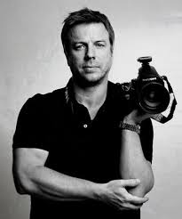

|  | About Malcolm Lismore |
| Capturing the Majesty of Scotland's Wilderness | |
| Malcolm Lismore is a dedicated freelance photographer residing on the untamed shores of the North West coast of Scotland. His lens is a conduit through which the rugged beauty and raw power of the Scottish landscape are immortalized. | |
| A Love Affair with Nature | |
| With an unwavering passion for the natural world, Malcolm's portfolio is a testament to his deep connection with Scotland's wilderness. From the majestic peaks of the Highlands to the serene shores of remote islands, his photographs evoke a sense of awe and reverence for the untamed beauty that surrounds us. | |
| Celebrating Wildlife in its Element | |
| Beyond landscapes, Malcolm's lens is drawn to the intricate tapestry of wildlife that calls Scotland home. Through his images, he brings to life the graceful flight of coastal birds, the playful antics of seals, and the elusive charm of native wildlife. | |
| Versatility in Vision | |
| While his heart belongs to nature photography, Malcolm's talents extend beyond the wilds. With a keen eye for detail and an intuitive understanding of light, he offers his services for weddings, portraits, and special events, capturing fleeting moments with authenticity and artistry. | |
| Experience the Magic Through Malcolm's Lens | |
| Whether you seek to adorn your walls with the grandeur of Scotland's wilderness or immortalize cherished memories, Malcolm Lismore invites you to embark on a visual journey through his lens. Each photograph is not just a frozen moment in time but a window into the soul of Scotland itself. |